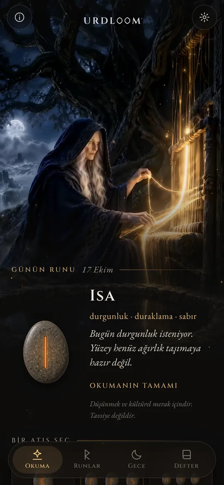
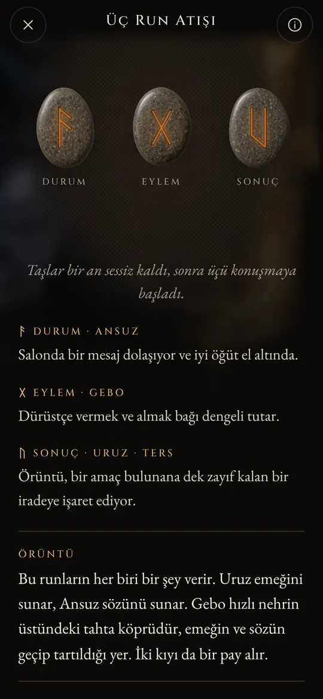
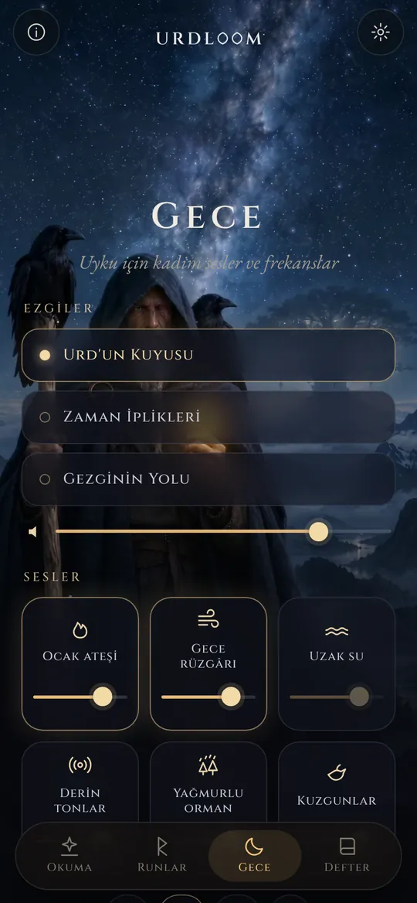
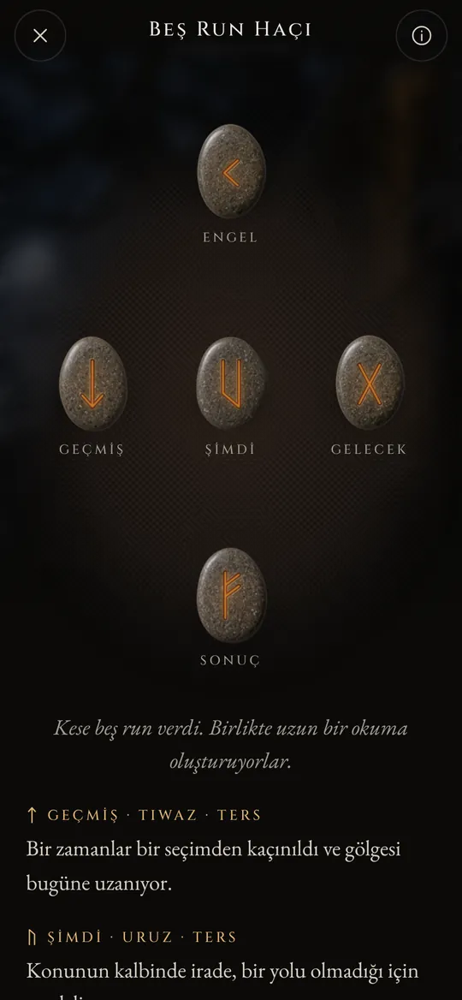

Kader kuyusundan run okumaları.
Elder Futhark'ı at, düşeni eski şiirlerin diliyle oku ve gece seslerinin seni uykuya taşımasına izin ver.
Bir kuyunun başında üç kadın oturur
Eski İskandinav şiirlerinde üç Norn, dünya ağacı Yggdrasil'in altındaki bir kuyunun başında oturur. Ağacın köklerini sular, çubuklara oyma yapar ve doğan herkesin hayatını belirlerler. En yaşlıları Urd'dur. Adı olup biten anlamına gelir ve kuyu onun adını taşır.
Urdloom adını ondan ve kaderin dokunduğu söylenen tezgâhtan alır. Uygulama bu havayı korur: elinde bir kese taş, yerde bir bez ve burç yorumunun değil, destanların diliyle yazılmış okumalar.

Oradan gelir bilge kızlar, üç kişi, ağacın altındaki gölden.Völuspá, 20. kıta
Tut, salla, bırak
Keseyi basılı tut, taşlar avucunda tıkırdasın. Bırakınca beze uçar, yuvarlanır, durulur ve tek tek dönerler. Okuma altlarında belirir.

Tek run
Önündeki gün ya da evet veya hayırla cevaplanabilecek bir soru için tek taş. Dokunursun ve atılır.


Üç run
Durum, eylem, sonuç. Kısa bir destan gibi soldan sağa, sonra bir bütün olarak okunur: kapanıştaki iplik üçünün birbiriyle nasıl konuştuğunu gösterir.

Beş run haçı
Ortada geçmiş, şimdi ve gelecek, üstte engel, altta sonuç; tam ortasında da sen.




Her okuma elle yazıldı: yirmi dört run, her ikili ve üçlü runların 2.024 birleşiminin tamamı, yirmi iki dilin her birinde. Sen beklerken hiçbir şey üretilmez.

Yirmi dört run
Elder Futhark, yaklaşık ikinci yüzyıldan sekizinci yüzyıla kadar oyulan en eski run alfabesidir. Yirmi dört işareti, başındaki runun tanrısının adını taşıyan sekizer işaretlik üç aileye, ætt'lere ayrılır. Okumak için bir taşa dokun.
Freyr'in ætt'i
Hagal'in ætt'i
Tyr'in ætt'i
Run adları her dilde eski hâlleriyle korunur. Bunlar işaretlerin kendi adlarıdır; akademisyenler onları run şiirlerinden ve en eski alfabelerden yeniden kurmuştur.
Runların kısa tarihi
Runlar her şeyden önce harflerdir. Germen halkları onları bin beş yüz yıl boyunca tahtaya, kemiğe, metale ve taşa oydu. İşaretler ve kura atma geleneği bize şöyle ulaştı.

Beyaz bezin üzerinde kuralar
Romalı tarihçi Tacitus, Germen halklarının meyve veren bir ağaçtan kestikleri dalı parçalara ayırdığını, üzerlerine işaretler çizip beyaz bir bezin üstüne saçtığını yazar. Bir rahip ya da ev reisi bunlardan üçünü birer birer alır ve okur. İşaretlerin run olduğunu söylemez, ama Urdloom'un koruduğu hareket budur.
İlk yazıtlar
Danimarka'daki Vimose bataklığında bulunan kemikten bir tarak, bilinen en eski run yazıtlarından birini taşır, tek bir sözcük: harja. Aynı yüzyıllardan mızrak uçları, broşlar ve muskalar yazının kuzeyde çoktan yayıldığını gösterir.
Tek taşta bütün dizi
Gotland'daki Kylver taşına biri yirmi dört işaretin hepsini sırasıyla oydu; elimizdeki en eski tam futhark budur. Dizi adını ilk altı harfinden alır: f, u, th, a, r, k.
Altın boynuzlar
Danimarka'daki iki Gallehus altın boynuzundan biri aliterasyonlu bir dize taşır: Ben, Holt'un oğlu Hlewagastiz, bu boynuzu yaptım. Herhangi bir Germen dilindeki en eski şiir dizelerinden biridir.
Viking Çağı için on altı işaret
İskandinavya'da alfabe on altı işarete iner: Genç Futhark. Bu harflerle binlerce anıt taşı dikilir; Danimarka'daki büyük Jelling taşları da bunlardandır.
Şiirler yazıya geçer
İzlandalı kâtipler Edda şiirlerini yazıya geçirir. Völuspá'da Nornlar Urd'un kuyusunun başında oturur; Hávamál'da Odin rüzgârlı ağaçta dokuz gece asılı kalır ve runları bir haykırışla alır.
Her run için bir dörtlük
Norveç ve İzlanda'dan kalan run şiirleri, daha eski bir Anglo-Sakson şiirle birlikte, her runa kısa bir dize verir: sığır akrabalar arasında çekişme doğurur, dolu tahılların en soğuğudur, buz çok kaygandır. Runların anlamları hakkında bilinenlerin çoğu bu dizelerden gelir.
Yeniden okumak
Runları düşünmek için kullanmak, bu şiirlere ve Edda'ların imgelerine dayanan modern bir canlanmadır. Urdloom bu geleneğin içinde açıkça durur: kadim bir kâhin olduğunu iddia etmez, yalnızca eski işaretleri özenle okur.

Uyku için kadim sesler ve frekanslar
Gün bitince gezgin yıldızların altına çıkar. Bir ezgi seç, üstüne sesler ekle ve zamanlayıcıyı kur. Sesler ekran kapalıyken de çalar ve kendiliğinden söner.
Üç ezgi: Urd'un Kuyusu, Zaman İplikleri ve Gezginin Yolu; boğaz ezgisi, çerçeve davul ve yaylı tagelharpa üzerine kurulu.
Her birinin kendi ses seviyesi olan altı katman: ocak ateşi, gece rüzgârı, uzak su, derin tonlar, yağmurlu orman ve kuzgunlar.
Her ses Urdloom için yapıldı ve uygulamanın içinde durur; internete gerek yoktur.
Önemli küçük şeyler
- Her sabah bir run
- İlk ekranda yüzü dönük bir taş bekler. İstersen her sabah kısa bir not, senin için hangi runun çekildiğini söyler.
- Bir defter
- Sana dokunan okumaları, sorduğun soruyla birlikte sakla.
- Paylaşılabilen okumalar
- Bir okumayı görsel olarak gönder: taşlar düştükleri gibi, sözler altlarında.
- Yirmi iki dil
- Her biri o dili okuyanlarca yazılıp gözden geçirildi; yazı tipini ve boyutunu değiştirebilirsin.
Burada olan burada kalır
Urdloom internetsiz çalışır. Hesap, üyelik ve reklam yoktur; hiçbir analiz ya da izleme aracı içermez. Soruların, okumaların ve defterin telefonunda kalır.
GizlilikSorular
Urdloom geleceği söyler mi?
Hayır. Okumalar düşünmek ve kültürel merak içindir. Eski runlar gibi işaret ederler; anlam senin hayatında şekillenir. Uygulamadaki hiçbir şey tıbbi, mali, hukuki ya da başka bir mesleki tavsiye değildir.
Dil neden eski geliyor?
Runlar şiirlerin, destanların ve bilmecelerin dünyasından gelir. Okumaları bilerek bu sesle yazdık ve her dilde run geleneğine olabildiğince yakın tuttuk.
İnternet bağlantısı gerekir mi?
Hayır. Okumalardan gece seslerine kadar her şey uygulamanın içindedir.
Hangi diller var?
İngilizce, Türkçe, Almanca, Fransızca, İspanyolca, İtalyanca, Portekizce, Rusça, Ukraynaca, Lehçe, Felemenkçe, İsveççe, Norveççe, Fince, Yunanca, Arapça, Hintçe, Endonezce, Japonca, Korece, Çince ve Arnavutça.
Bize yaz
Sorular, kendi dilinde yanlış okunan bir sözcük ya da aklında kalan bir okuma: her mesajı okuyoruz.
support@urdloom.com